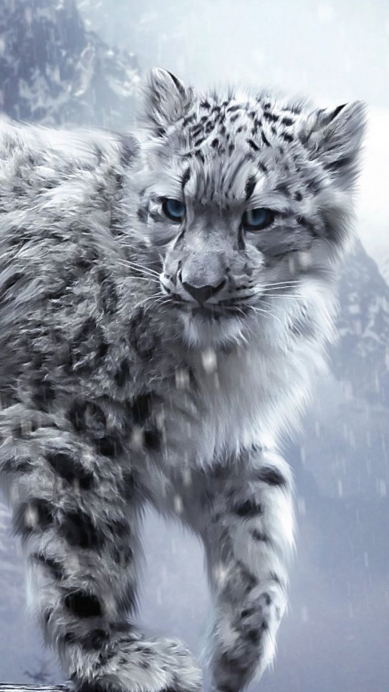

Bonjour a tous, je m'appelle Macodou TALL, j'ai 22 ans j aime les animaux et les mangas.
La panthère des neiges est extrêmement bien adaptée à son habitat naturel de haute montagne et au climat très froid. Elle se rencontre à de très hautes altitudes, entre 2500 mètres et 5400 mètres, mais également à pas plus de 500 mètres en Russie. Grâce à sa splendide fourrure tachetée elle est presque invisible dans son environnement, se confondant avec les rochers enneigés et les pierriers.
Mais aujourd’hui, l’espèce est en péril. Présente dans douze pays, la panthère des neiges est menacée dans chacun d’entre eux ! Avec la dégradation et la disparition de son habitat au profit de l’activité humaine, le braconnage et l’accroissement des conflits avec les communautés locales, la population du félin a décliné de plus de 20% ces 20 dernières années. Panthere des neiges
un animal en voie de disparition
La panthère des neiges est chassée ILLEGALEMENT pour sa fourrure, très prisée en Asie centrale, en Europe de l'Est et en Russie sous forme de manteau et autres vêtements ( alors comme ça, après les toques on a le droit aux manteau ? Hééééé ben !... C'est de mieux en mieux !!! ). Les os et autres parties de son corps sont également très demandés dans la médecine traditionnelle chinoise. Enfin, les félins sont souvent caturés à l'état sauvage pour aller rejoindre des collections animalières privées en Asie centrale. En 2003, il en restaient moins de 7 500 ( le chiffre a rebaissé depuis, je vous laisse imaginer le topaud ).